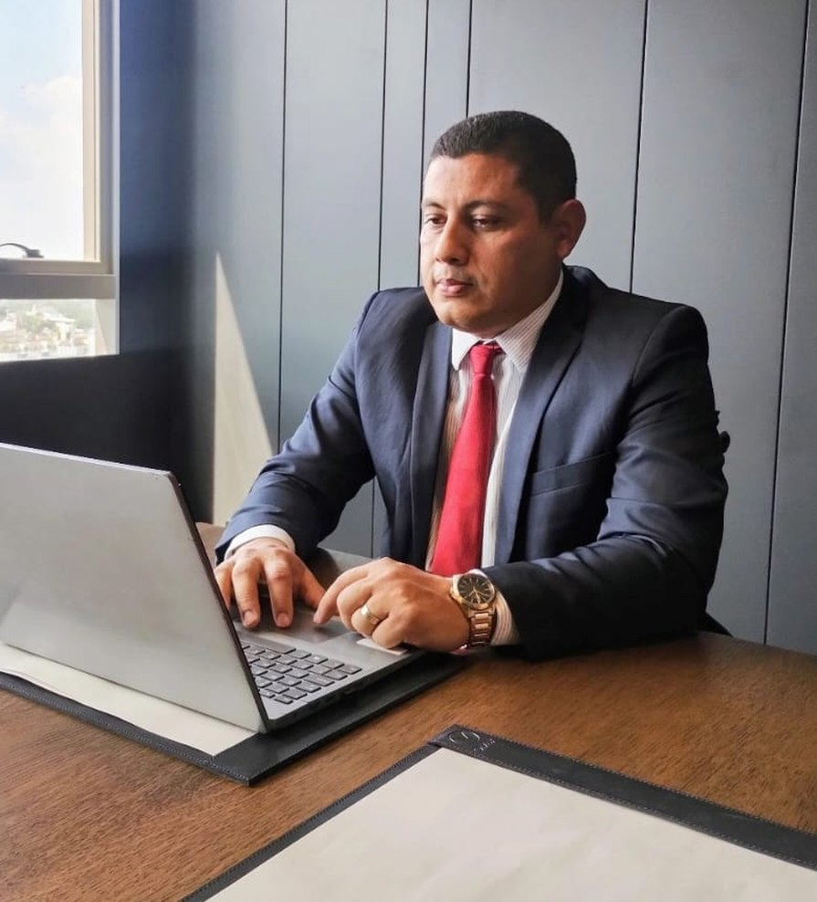

Segurança jurídica para a rotina e para as decisões da sua empresa.
Atuação consultiva, preventiva e contenciosa, nas áreas cível e trabalhista, ao lado de quem administra e decide.
- Consultivo
- Preventivo
- Contencioso
- Cível e Trabalhista
Descubra onde a rotina trabalhista da sua empresa está exposta.
Responda a um questionário de cerca de 5 minutos. Em até 5 dias úteis, o escritório envia um relatório individual com o nível de atenção da empresa, os pontos que merecem correção e as providências sugeridas.
- 01RespondaQuestionário objetivo sobre contratação, jornada, encargos e segurança do trabalho.
- 02Receba o relatórioAnálise em PDF, com semáforo de risco e panorama por tema, em até 5 dias úteis.
- 03DecidaUse o relatório para priorizar medidas que reduzam o risco trabalhista da empresa.
- Contratação
- Jornada e horas extras
- Escala 6x1
- Remuneração e encargos
- Saúde e segurança (NR-1)
- Assédio e compliance
- Norma coletiva
- Terceirização
As informações enviadas são tratadas com sigilo, nos termos da LGPD. O relatório é preliminar e orientativo e não substitui a análise jurídica do caso concreto.
Três formas de proteger a empresa.
Escolha a frente e veja como atuamos nas áreas trabalhista e cível.

Advocacia pensada para a realidade das empresas.
O Dr. Adclylson Nascimento Sevalho atua com foco em empresas, de forma consultiva, preventiva e contenciosa, nas áreas cível e trabalhista.
No consultivo e no preventivo, o objetivo é organizar contratos, rotinas e documentos para reduzir riscos. Quando o litígio é inevitável, a empresa conta com defesa técnica e acompanhamento próximo do processo.
Seis perguntas para enxergar pontos de atenção.
Uma triagem rápida e informativa. Responda sobre a sua empresa e veja onde vale uma conversa.
Informação para quem administra uma empresa.
Artigos objetivos sobre temas trabalhistas e cíveis do cotidiano empresarial.
Vamos conversar sobre a sua empresa.
O primeiro contato pode ser pelo WhatsApp. Conte brevemente o que precisa e retornamos para combinar os próximos passos.
- WhatsApp(92) 98646-1674
- E-mailadclylson@sevalhoadvocacia.com.br
- EndereçoRua Professora Cacilda Braule, nº 90, Núcleo 12
Bairro Cidade Nova, Manaus/AM
CEP 69.096-440
Abrir no Google Maps